01 — Overview
The ER-Default problem
International students at the University of Toronto often face a navigability crisis. Despite having insurance (UHIP), many default to the Emergency Room for minor issues due to a lack of clear system knowledge.
The result is a vicious cycle: overcrowded ERs, delayed care for critical patients, stressed students, and spiralling costs — all driven by an information gap that a well-designed system could close.
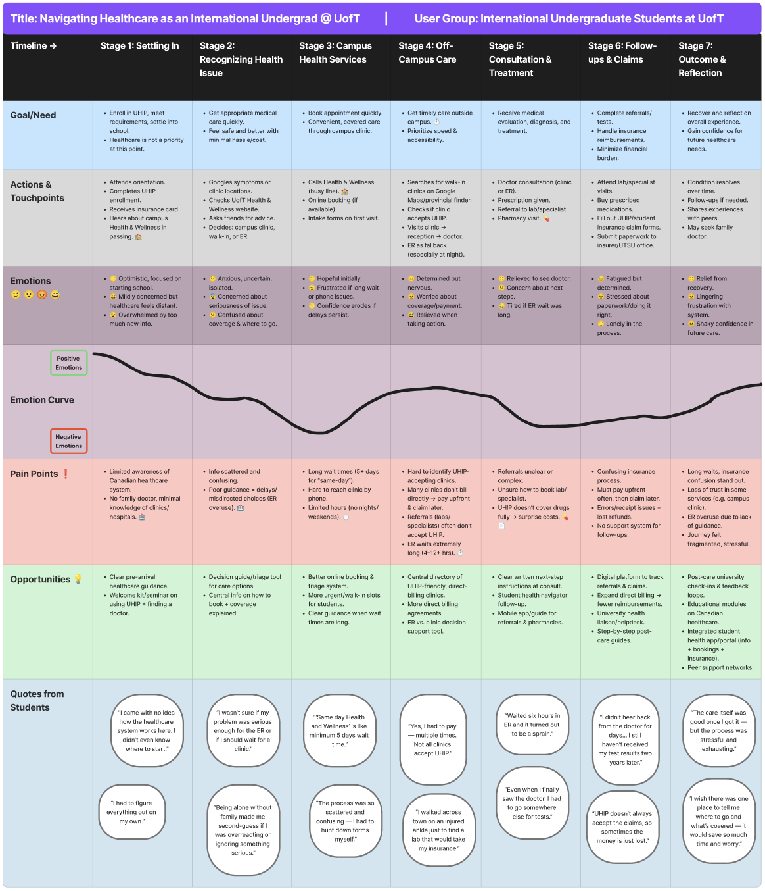
Figure 1 — User Journey Map: tracking the "Onset to Outcome" experience of navigating UofT healthcare.
02 — The Problem
The "Uncertainty → Panic → ER" pipeline
Through research, I identified a dangerous cognitive pattern: when a student feels ill at 10 PM, the cognitive load of checking insurance coverage is simply too high. They default to the ER because it's the only "guaranteed" care — leading to overcrowding.
"Students would rather wait for an Uber while in severe pain than risk an uninsured ambulance fee, yet they default to the ER for a simple fever because it's 'guaranteed' care."
I visualized the density of these barriers through a detailed mind map, identifying key clusters around Wait Times, UHIP Coverage Clarity, and After-Hours Decision Support.
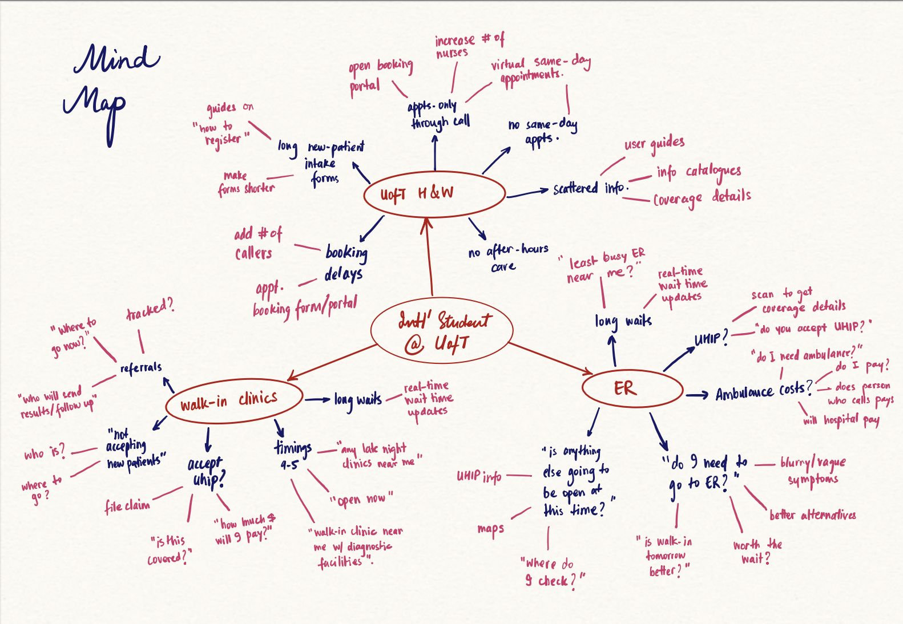
Figure 2 — Mind Map: mapping the fragmentation of information students face when seeking care.
03 — User Research
What the data revealed
We conducted surveys and interviews with international students across diverse backgrounds, focusing on their mental models around healthcare navigation. The findings were stark.
Report difficulty booking at Health & Wellness Centre
Experience ER wait times of 4+ hours
Uncertain about what UHIP insurance covers
Went to ER when a lower-acuity option was appropriate
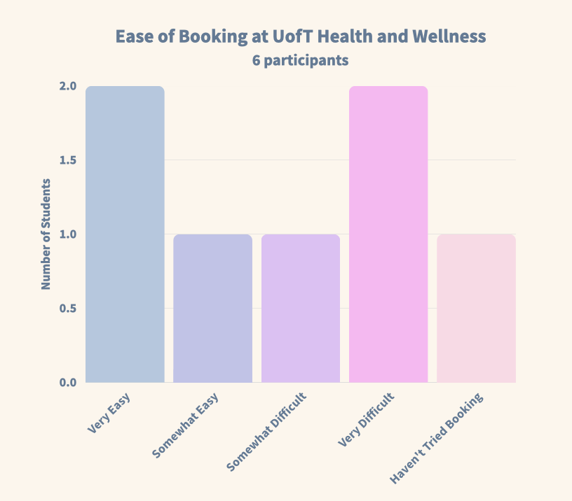
Figure 3a — Booking difficulty at Health & Wellness.
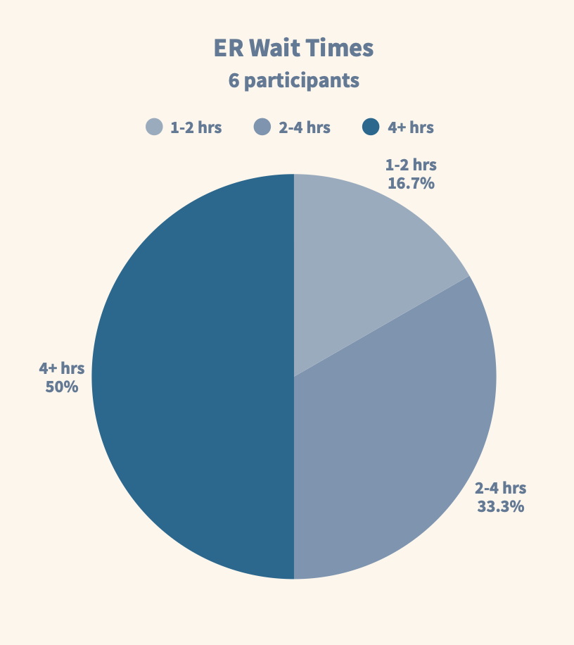
Figure 3b — ER wait time distribution.
04 — Ideation
From 24 concepts to 1 solution
I adopted a "Quantity over Quality" approach (Crazy 8s) to break through initial biases, generating concepts ranging from Health Drones (Low Feasibility) to the winning solution. Every idea had to be evaluated fairly before any were ruled out.
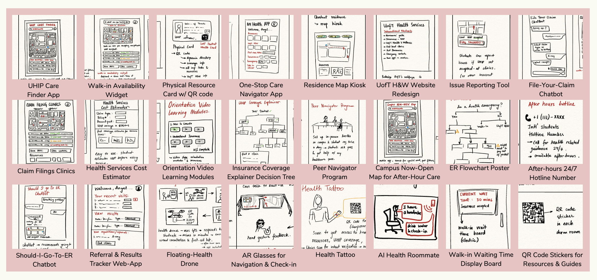
Figure 4 — The Ideas Board: 24 distinct concepts, from floating drones to AI chatbots.
I evaluated each concept against six weighted criteria: User Value, Feasibility, Equity, UHIP Alignment, After-Hours Support, and Testability. The selection matrix (below) made the decision clear.
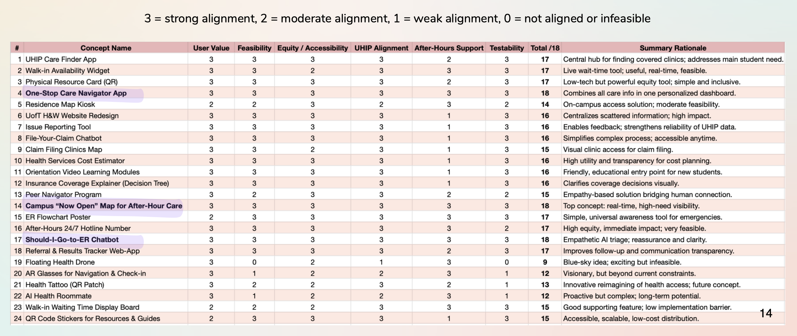
Figure 5 — Concept Selection Matrix: the winning ideas emerged from systematic evaluation.
Two concepts rose to the top and were combined into one unified solution:
- ✓One-Stop Care Navigator App — AI triage + insurance guidance in one place
- ✓Campus "Now-Open" Map — Real-time availability of care options near campus
05 — Iterative Design
Prototyping, testing, and refining
We built from rough wireframes to a fully interactive high-fidelity Figma prototype, with user testing at each stage to catch friction early.
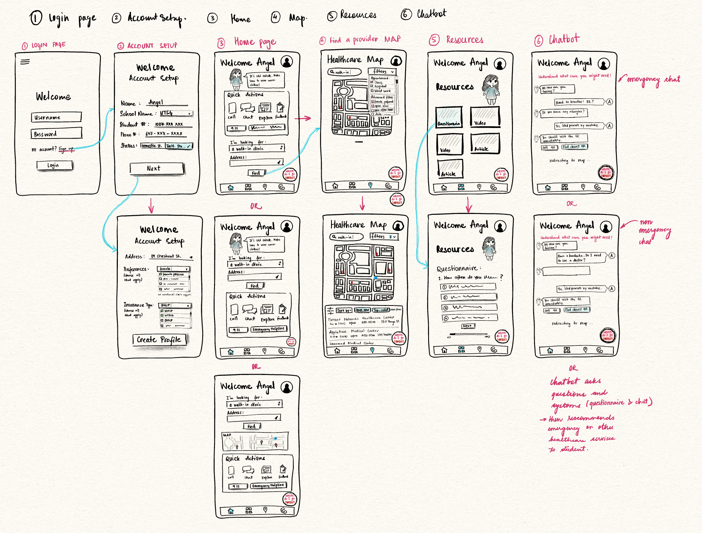
Figure 6 — Low-Fi Wireframes: mapping core user paths before committing to high-fidelity.
Testing our low-fi wireframes revealed that while the core navigation was intuitive (100% task completion rate), specific pages like "Account Setup" were over-engineered. We used these insights to simplify the high-fidelity design.
Task completion in low-fi testing
Average satisfaction score across tasks
Low-Fi → High-Fi: Key Iterations
Three friction points drove major UI changes between rounds:
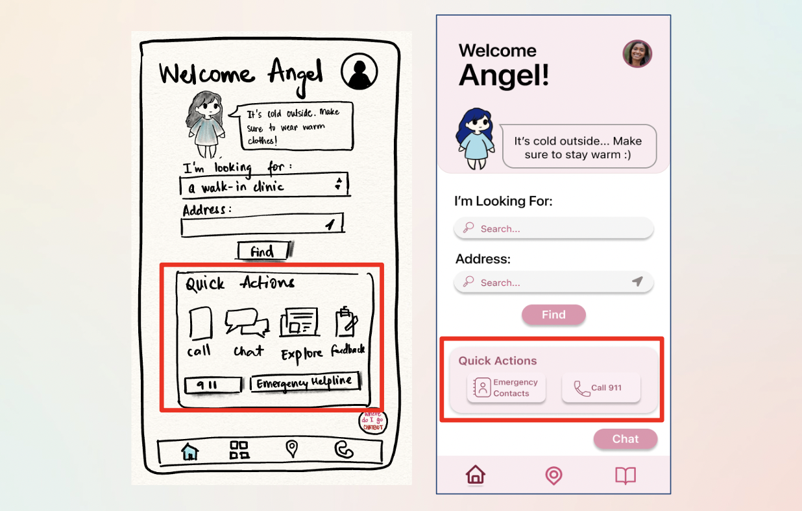
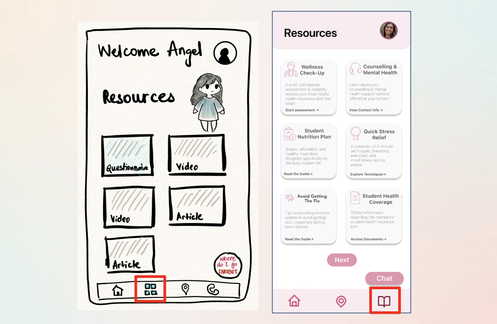
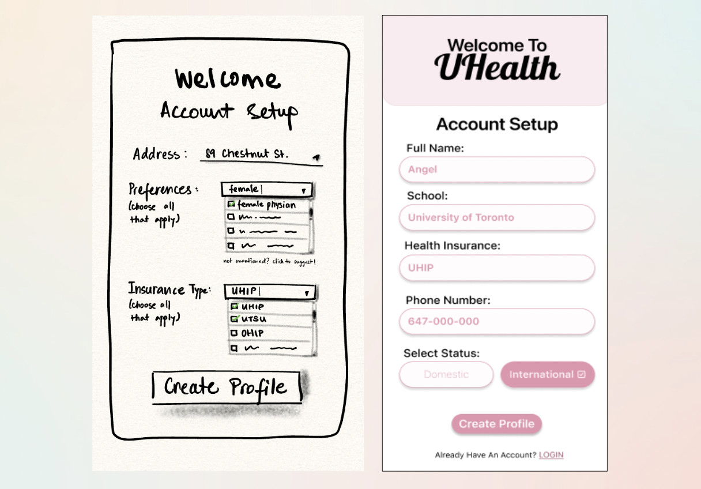
Polishing the High-Fidelity UI
Even in high-fidelity, usability testing revealed subtle friction. A micro-iteration sprint resolved clarity issues across three key areas:
Map Filters
Removed redundant "More Filters" options to simplify the sorting bar and reduce cognitive load during stressful moments.
Quick Actions
Replaced generic "Notes" shortcut with high-value Emergency contacts — directly addressing the most critical user need.
Chatbot Visibility
Switched from an abstract icon to a clear "Chat" text label to increase feature discovery for first-time users.
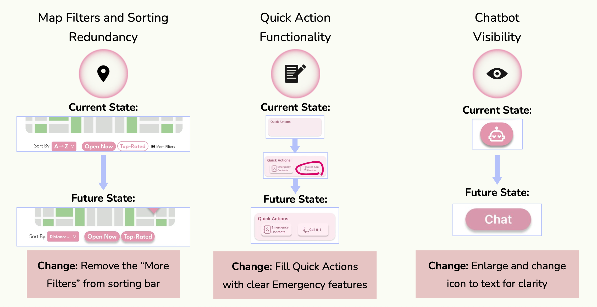
Figure 7 — High-fidelity iterations: current state vs. future state for each UI refinement.
High-Fidelity Prototype Demo
06 — Usability Testing
Reality check: what users actually did
Prior to the AI redesign, we tested the prototype with real users (n=6) to validate our assumptions. While the critical "ER Bot" flow had a 100% completion rate, Task 2.2 (Use Filters) revealed a friction point — a failed attempt and the lowest satisfaction score (4/5) of the session.
This "failure" was a big learning moment. It highlighted that even a simple UI fails if the interaction design doesn't account for the physical constraints of a stressed, possibly unwell user.
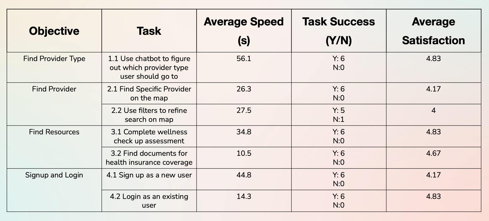
Figure 8 — Quantitative usability testing results: task completion rates and satisfaction scores.
07 — AI-Assisted Audit (Post-Course)
The Gemini 3.0 stress test
After completing the course, I used Gemini 3.0's Reasoning Mode to perform a "Stress Test" on my design — acting as a Human Factors Engineer and asking the AI to audit my prototype against Nielsen's Heuristics with a focus on "High-Panic" user states.
Gemini 3.0 vs. Nielsen's Heuristics
| Heuristic | Student Testing Finding | Gemini 3.0 AI Insight |
|---|---|---|
| Visibility of System Status | Users completed ER Bot flow but felt "uncertain" about length. | Critical Gap: In a "Panic" state, users need a visible progress bar. Lack of "Steps Remaining" increases abandonment risk. |
| Match System with Real World | Confusion over terms like "Direct Billing" and "Requisition." | Jargon Alert: Non-native speakers view "Billing" as "Cost." AI suggested replacing text with "No-Cost" icons. |
| Error Prevention | Login rated 1/5 satisfaction — "annoying" due to keyboard handling. | Physical Constraint: Login requires too much dexterity in an emergency. AI proposed a "Guest Access" mode to bypass auth entirely. |
Proposed Version 2.0 Changes
- 1Emergency Guest Mode: A "Zero-UI" entry point allowing students to access the ER map immediately without logging in.
- 2Predictive Wait-Times: Historical data showing "Busy Trends," helping students avoid clinics about to hit capacity.
- 3Jargon Translator: An AI overlay translating complex insurance terms (e.g., "Deductible") into plain student language.
08 — Results
What we achieved
09 — Final Thoughts
What I learned
This project taught me that healthcare is fundamentally an information systems problem. The ER overcrowding isn't a UI issue — it's a systems failure driven by information asymmetry. Good design is one lever, but it must be grounded in a deep understanding of the system it operates within.
By combining Human Factors principles (visibility, error prevention, cognitive load) with AI-assisted auditing, we can build systems that don't just look good — but actually work when users need them most, in their most vulnerable moments.
If I were to continue, I'd focus on community trust vectors: peer reviews of care facilities, anonymized "what worked for me" stories from other international students. Social proof is often more persuasive than any official communication — and it builds the kind of confidence that stops people from defaulting to the ER.